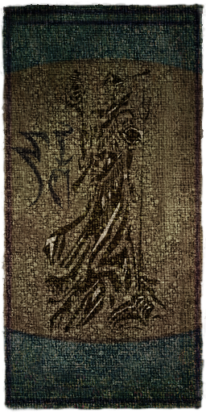
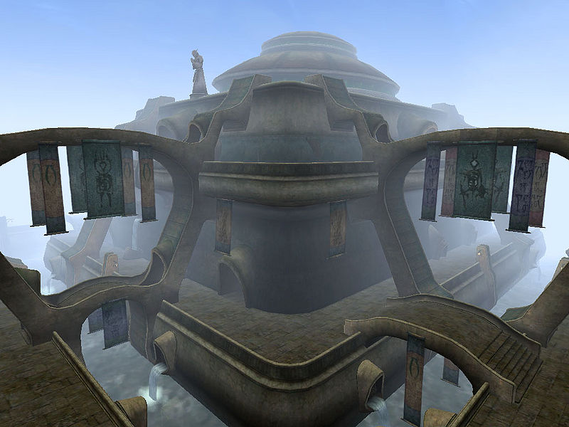
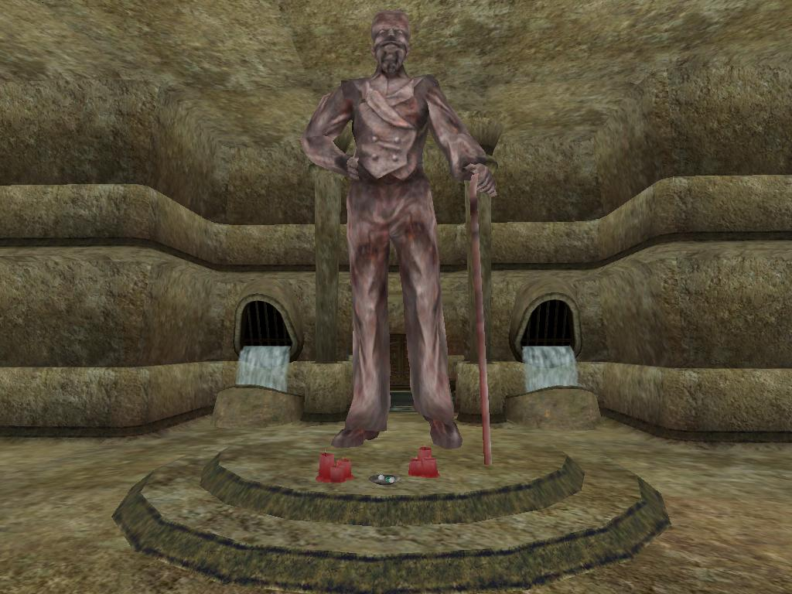
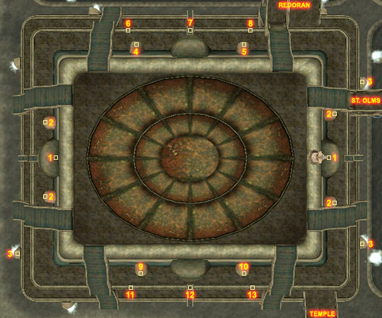
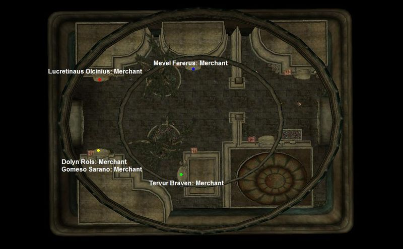
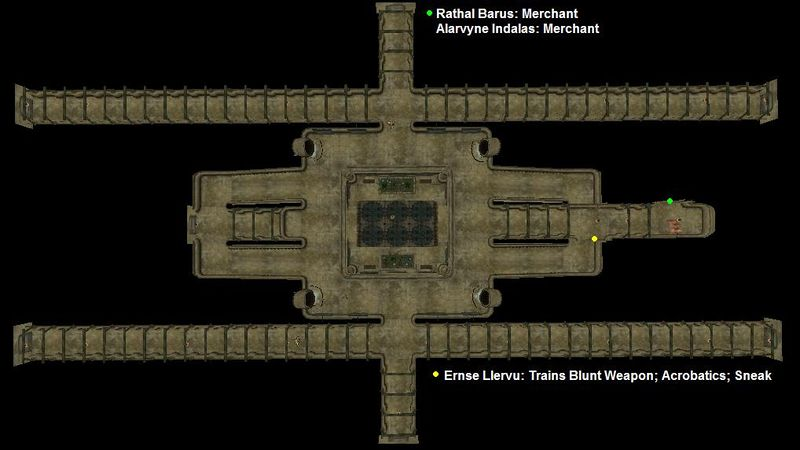

|  |
|
 The St. Delyn Canton |
|
 The Statue of Sheogorath |
|
 Map of Vivec's St. Delyn canton |
The St. Delyn Potter's Hall and Glassworker's Hall: You can talk to Alarvyne Indalas for Liberate the Limeware quest. A few traders have their shops here. You might meet an Invisible Man wandering the Plaza.
The Abbey of St. Delyn the Wise houses the Master Trainer in Blunt Weapons, Ernse Llervu, located downstairs in a locked room.
The Glassworker's Hall and the Abbey both have staircases within those areas leading to the Plaza.
The Shrine Ihinipalit is guarded by a brute named Haki, who can be a handful at lower levels. Talk to the Statue inside to get the Sheogorath Quest.
The Storage Area is a small maze, starting off with rats in the hallways and ending with undead waiting behind doors.
Behind A Worn Cavern Door is a trapped and locked chest with leveled loot, Thieves Tools and an enchanted weapon. The room is infested by rats, but has a bedroll and a small fire.
Bridges connect to Redoran, Temple, and St. Olms. There are no Gondola services here.
|  Services in the Plaza |
|  Services in the Waistworks |